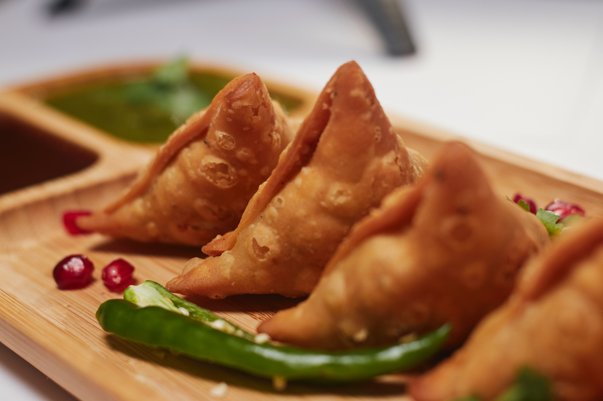

Samosa

Description
Samosa is one of the most commonly eaten snacks across India. They are hugley popular and are loved by everyone. Samosas make their appearance everywhere as a street food, party snack, restaurants and even in cafes.
This step by step guide will help you make the flakiest, tastiest, absolutely best samosa.
Ingredients
- 2 cup all purpose flour.
- 5 boiled potato
- 2 cup refined oil
- 1 teaspoon coriander powder
- 1/4 cup water
- cumin seeds, red chilli powder, salt, garam masala as needed
steps
- Sauté cumin seeds for potato filling
- Add spices and boiled potatoes and cook for a while
- Prepare the dough for the Samosa
- Roll the dough in small puris and cut into half
- Fill the semi-circle with potato filling and deep fry